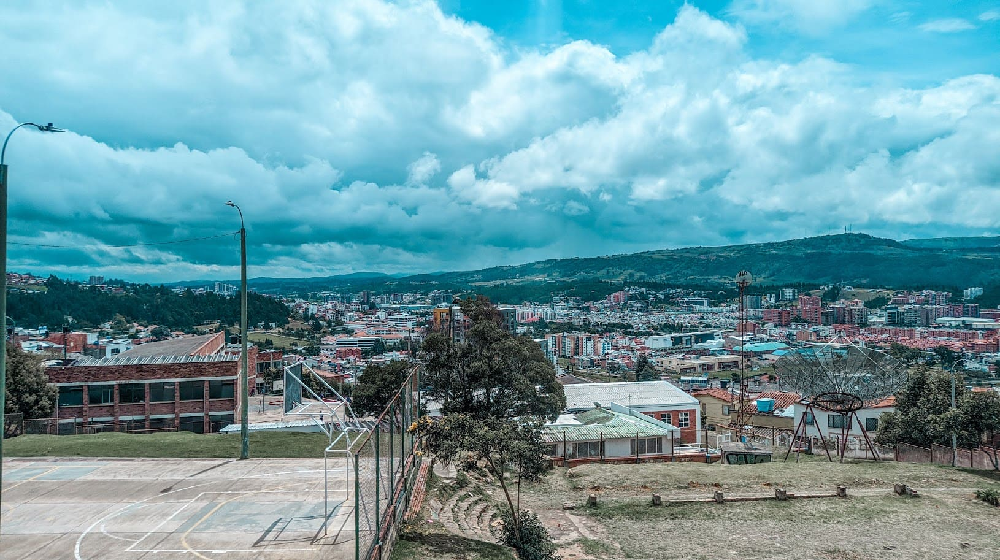
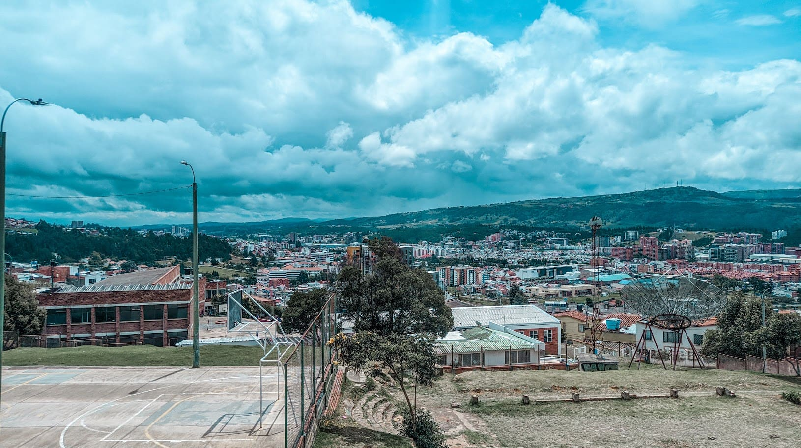
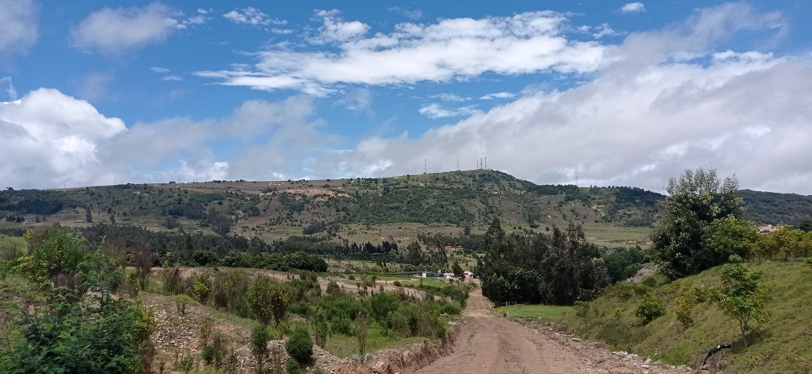
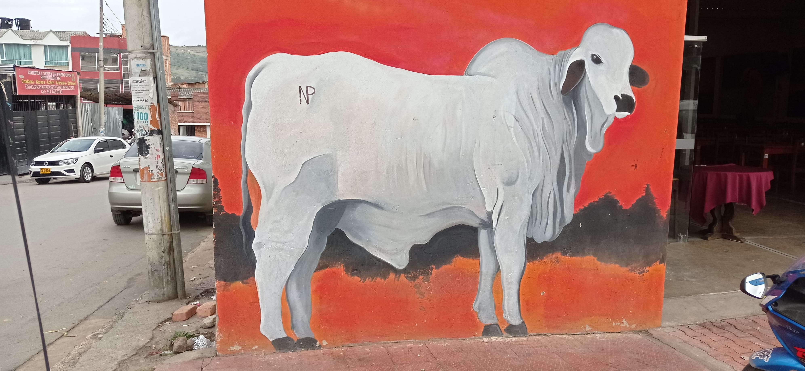
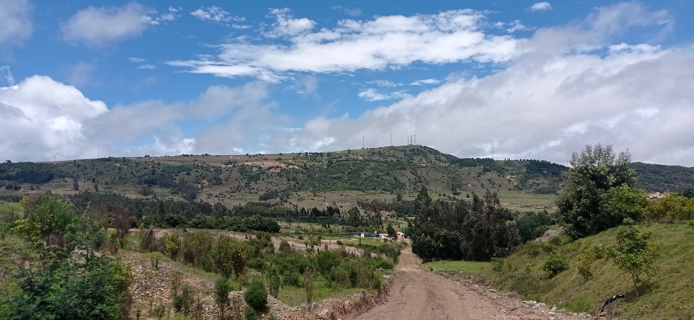
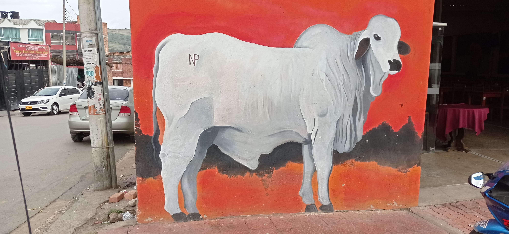

Galería de imágenes
 


 



Dato curioso
Un dato curioso del turismo en Tunja es que su nombre proviene de la ancestral población muisca llamada "Tchunza", que significa “varón poderoso”. Tunja fue la cuna de estos muiscas y rindieron culto a los Zaques, que eran sus gobernantes y considerados hijos del Sol